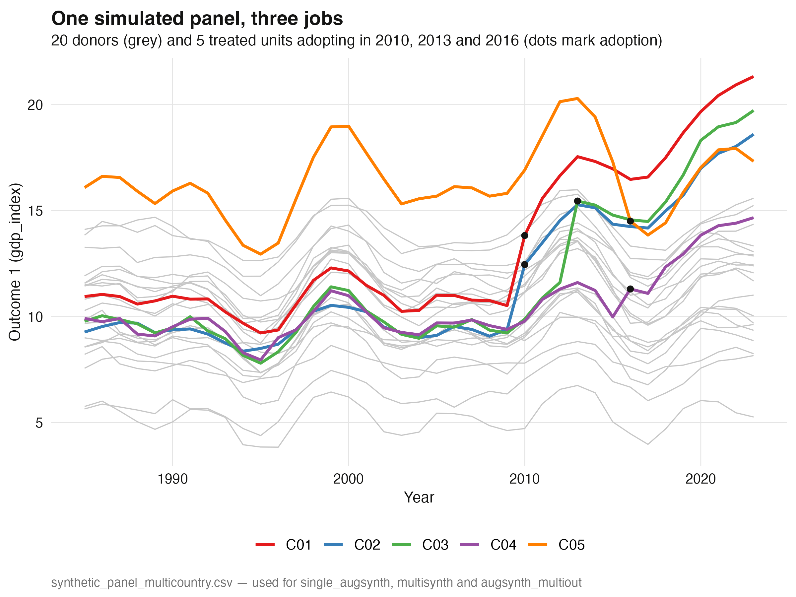
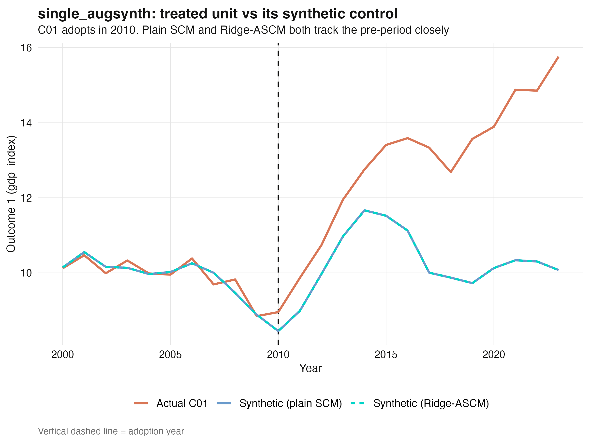
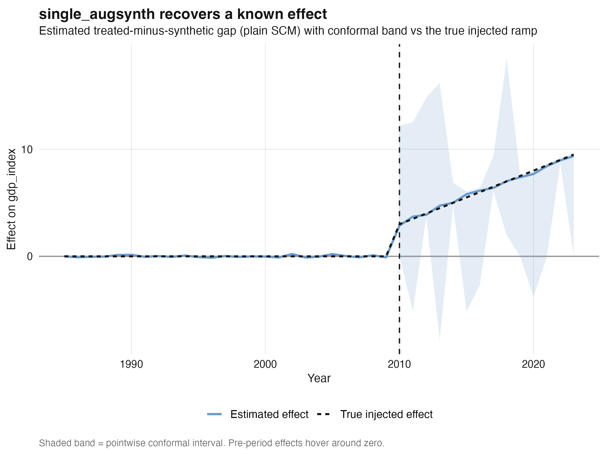
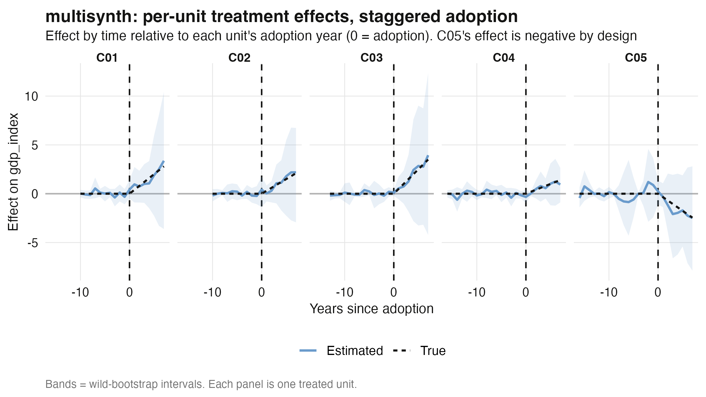
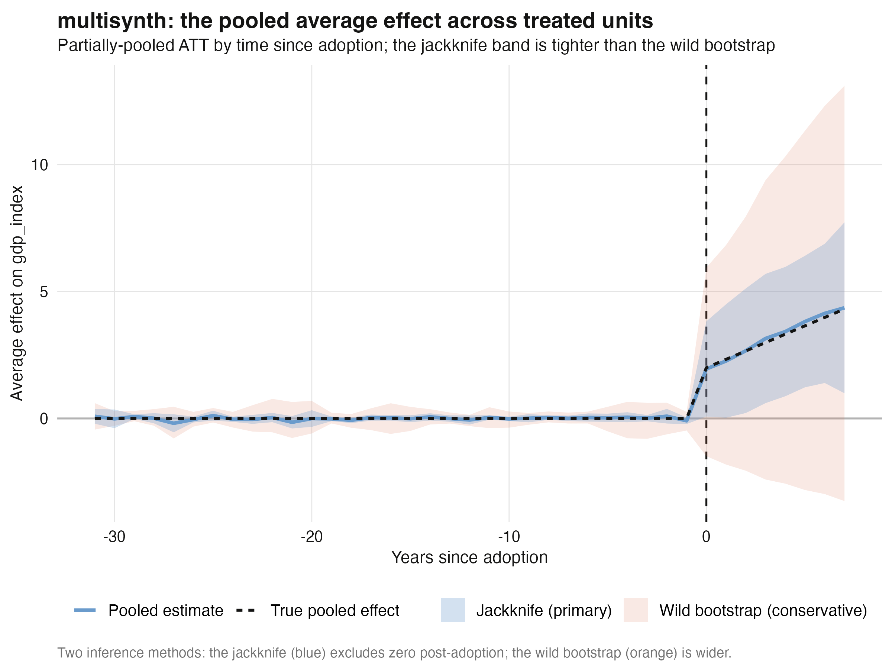
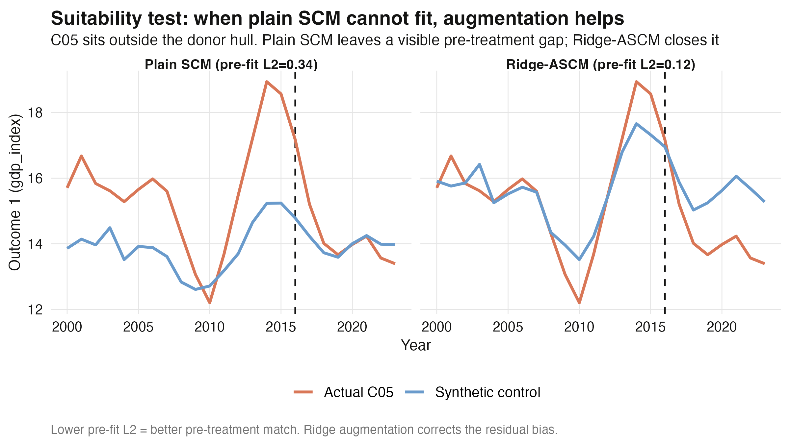
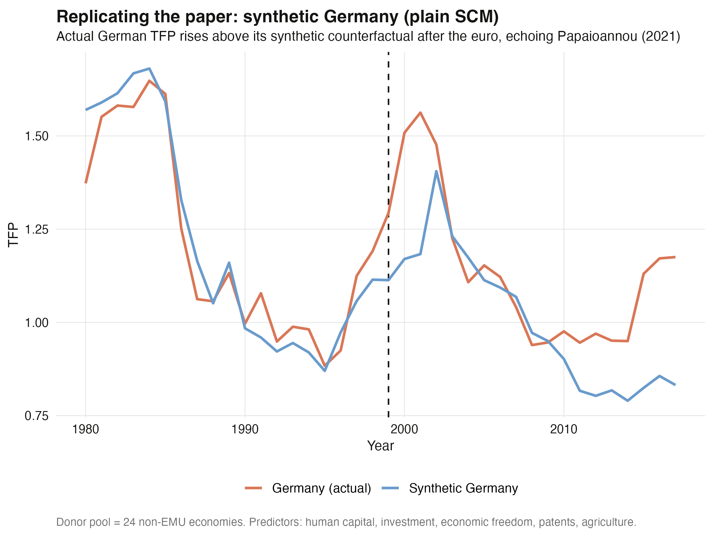
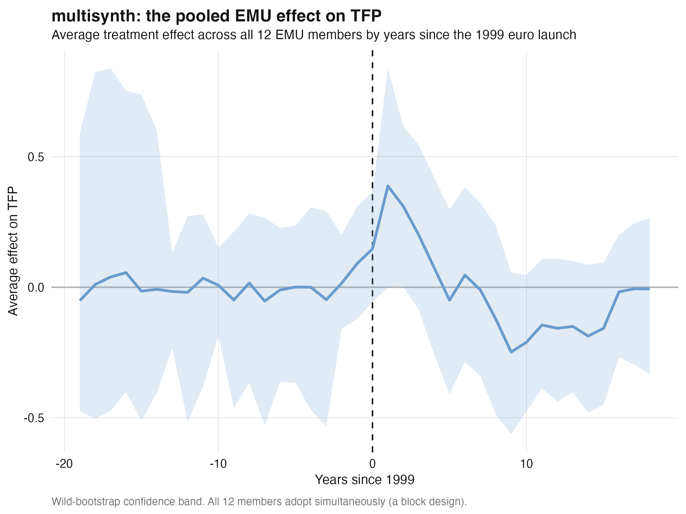
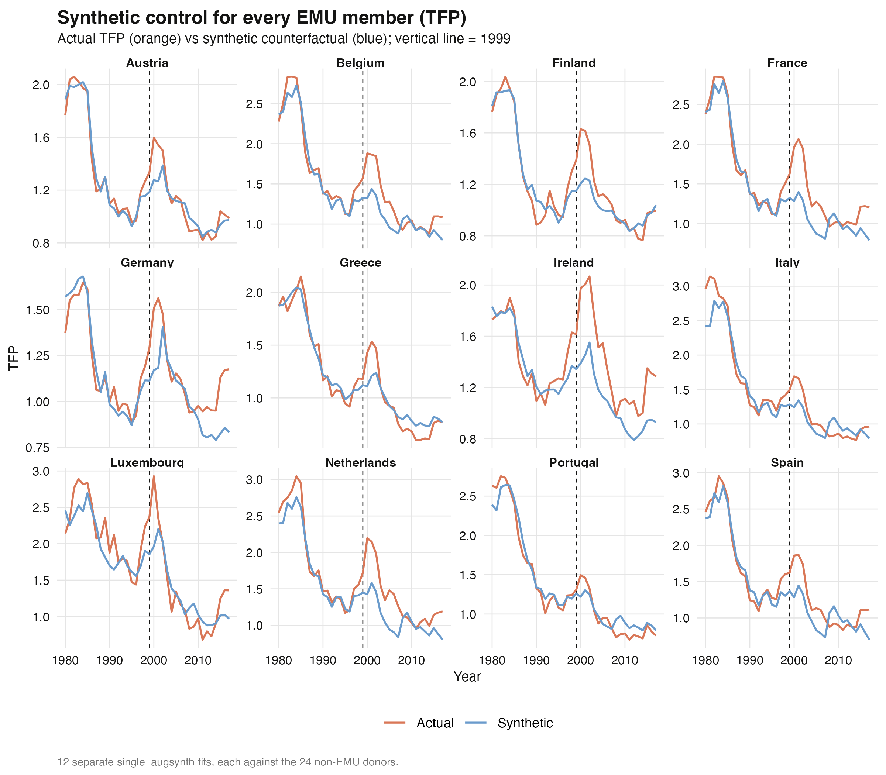
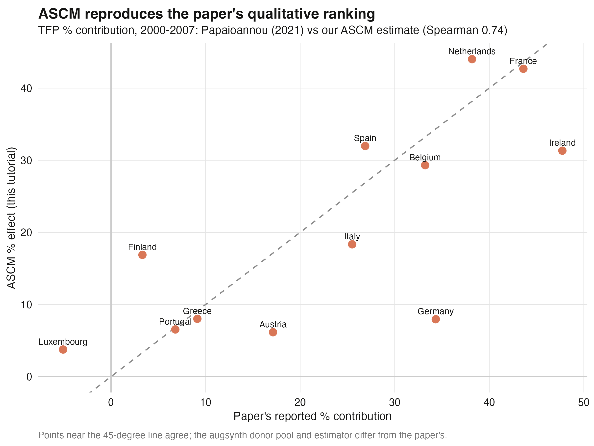

Validate on a known truth, then trust the euro question
Nagoya University (GSID)
June 11, 2026
Act I
Did joining the euro make a country more productive? We see only the world that happened — never the path it would have taken.
Synthetic control builds the missing twin from a weighted recipe of donor countries. But classic SCM works only when the pre-treatment match is nearly perfect — and across structurally different countries it rarely is. So when can we believe it?
We never trust a number on real data that the same method could not first recover on simulated ground truth.
augsynth entry points — one unit, many units, many outcomesAct II
single_augsynthmultisynthaugsynth_multioutFormula mini-language: outcome ~ treatment | covariates.

25 simulated paths — five treated units (colored) inside a cloud of 20 donors (grey); dots mark each adoption year.
\[W^{\star} = \arg\min_{W \in \Delta}\ \lVert X_1 - X_0 W \rVert_V \quad\text{s.t.}\quad w_j \ge 0,\ \sum_j w_j = 1\]
\[\hat\tau_t^{\,\mathrm{aug}} = \Big(Y_{1t} - \sum_j w_j Y_{jt}\Big) - \Big(\hat m_t(X_1) - \sum_j w_j\,\hat m_t(X_j)\Big)\]
The first term is the plain SCM gap; the second is the Ridge correction \(\hat m_t\). Perfect pre-fit → correction vanishes → ASCM \(=\) SCM.
single_augsynth recovers C01’s ATT to within 0.1% — and it’s significant
C01 actual vs its synthetic control: the synthetic tracks the pre-2010 path closely, then the gap opens.

Estimated treated-minus-synthetic gap with its conformal band, overlaid on the true injected effect — near-perfect recovery.
sim_single <- panel |>
mutate(trt = as.integer(country == "C01" & year >= 2010))
sc_plain <- augsynth(gdp_index ~ trt, country, year, sim_single,
t_int = 2010, progfunc = "None", scm = TRUE)
sc_ridge <- augsynth(gdp_index ~ trt, country, year, sim_single,
t_int = 2010, progfunc = "ridge", scm = TRUE)
summary(sc_plain, inf_type = "jackknife+")$average_attmultisynth recovers the pooled ATT — and every per-unit sign, including a negative one
Per-unit treatment effects under staggered adoption: each unit’s estimate climbs to meet its dashed truth line — and C05 drops the opposite way.

Pooled average effect with the tight jackknife band (excludes zero) and the wide wild-bootstrap band (includes zero), vs the true pooled effect.

Suitability test for C05: plain SCM (blue) drifts from actual C05 (orange) before treatment; Ridge-ASCM pins them together pre-2016.
0.128
mean recovery error across five units after Ridge-ASCM — down from 0.737 under plain SCM
Act III

Synthetic Germany under plain SCM: actual TFP (orange) rises above the synthetic counterfactual (blue) after the 1999 euro launch.

Pooled euro-area effect on TFP: flat pre-1999, a +0.39 early bump, eroded into negative territory by the 2008–2014 crisis, recovering by 2017.

Synthetic control for every euro member: most run above their synthetic counterfactual after 1999; Greece and Portugal fall below post-crisis.
0.74
Spearman rank correlation between our ASCM TFP % effects and the paper’s, 2000–07 (Pearson 0.76)

ASCM vs Papaioannou (2021): per-member TFP % contributions cluster around the 45-degree line, Spearman 0.74.
We do not reproduce the paper’s numbers exactly — and should not. Same signs, same ranking, same dynamic story is the right bar.
Objection. Machine-augmented donor weighting can’t manufacture identification — you’ve just dressed up a correlation.
Response. Correct, and we never claim otherwise. The ATT is identified only under no anticipation / a credible pre-treatment fit and the absence of confounding shocks coinciding with the euro. ASCM disciplines the counterfactual construction; it cannot rule out a contemporaneous shock. That is why we validated on simulated truth, read every pre-fit, and reported the borderline and null results as exactly that.